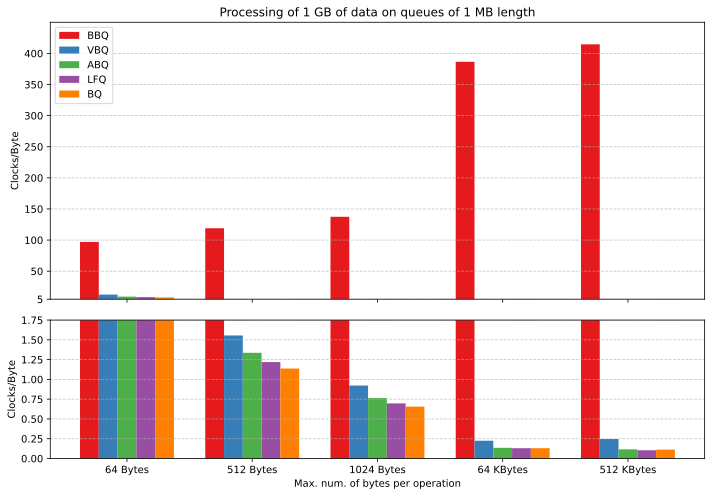

Published on 10 September 2025
I often use queues for work and in personal projects, and I think you do too; for instance you may need to save bytes received from a socket for later processing, or to read from a file faster than stdio. Anytime you need two entities to communicate asynchronously in a FIFO pattern, you use a queue.
The most common implementation of a queue is the circular buffer, which uses a fixed-size buffer and two cursors over it, usually referred to as head and tail. They index the location of the next read and the next write. If you were to google for a queue implementation or ask ChatGPT to implement one, you would probably get something like this one:
For the sake of future references, let's name the previous implementation "Basic Byte Queue (BBQ)".
I used this style of queue for quite a bit of time, but always felt unease as I had the feeling it could be improved quite a bit. Only recently I stopped and thought about how it could be improved. So, this article shows my process of improvement and how I got to an implementation that is 1000x faster, more elegant, and that provides more features.To put things in perspective, 1000x is the difference between processing 1 GB of data in 30 ms instead of 30 s!
All the code shown in this article, along with the final implementation and the tests for correctness and performance, is available in the github repo.
The starting point is the API: why call the push/pop functions on each byte? Wouldn't it be better if we managed bytes in batches? This would greatly reduce the cost associated to function calls, such as preparing the stack frame and jumping to the function. Apart from this overhead, you also have a number of operations that you could perform once for all the bytes to push/pop instead of doing them for each single byte.
This is how the queue_push and queue_pop operations look like with this modification:
Let's call this implementation the "Vectorial Byte Queue (VBQ)".
With this API, the push operation expects a pointer to an array of bytes and its length and it tries to copy all of them in the queue. The pop operation does something similar in the opposite direction.
The second modification comes by noticing that the most expensive operation on computers in terms of latency is accessing memory. Roughly, accessing RAM requires 10x the time needed to access L2 cache, and accessing the L2 requires 10x the time needed for accessing the L1.
The rule of thumb here is: always avoid unnecessary copies!
We are actually doing an unnecessary copy in the previous implementation because the push operation could provide a direct pointer to the internal queue memory and the maximum number of bytes the user can write, and the same applies for the pop operation.
This is how the two operations look like after applying this change:
Let's call this implementation the "Acked Byte Queue (ABQ)".
With this, the user needs to commit the operations to inform the queue on how much bytes he pushed or popped but you can clearly see that this code allows the program to skip one useless data copy.
Another step forward is reducing the internal state to just two of the three variables: head,
tail, and nelem. The reason we have them in the first place is that when
head == tail, it’s impossible to distinguish whether the queue is empty or full once the producer
has filled it. Some implementations remove nelem and use a special value (e.g. -1) for
head and tail to indicate emptiness; others remove
tail and only rely on head and nelem.
But there’s also a third, more elegant solution: using only head and tail,
without any special marker, while still being able to clearly distinguish between an empty and a full queue.
By restricting the queue length to a power of two and keeping head and tail
as ever-increasing counters (without applying modulo immediately), it becomes straightforward to distinguish between an empty and a full queue.
In this scheme, head == tail always indicates that the queue is empty, while
(tail - head) == capacity always indicates that it is full. Even when tail
overflows and wraps around SIZE_MAX, the implicit modulo arithmetic
(mod SIZE_MAX+1) ensures correctness. The actual index into the buffer can then be computed by applying the
modulo operation only when needed for access.
capacity == 3, and currently head == SIZE_MAX,
about to tick over to zero. To pop the next element you access data[head % 3] == data[0], because
SIZE_MAX % 3 == 0. After the pop, you update:
head = head + 1 == 0, because SIZE_MAX + 1 == 0.
We've incremented head but the effective value is still zero!
By using head and tail, we gain the additional benefit that the queue can be made MT-safe with only minimal
modification. If we only allow one producer thread and one consumer thread, we can even avoid locks, making the implementation entirely lock-free.
The only needed thing is that head and tail are accessed with
acquire/release consistency to be sure that the result of buffer memory
is accessed in the correct order with respect with state updates.
If head and nelem were used to represent the state,
both would need to be updated atomically by the consumer after a pop; otherwise, the state could become inconsistent.
This would either require a lock or storing both variables in a single word that can be updated atomically.
Compared to the previous approach, however, this feels like an unnecessary complication.
This is how the operations look like after applying the two previous observations:
Let's call this implementation the "Lock-Free Queue (LFQ)".
There are other two improvements that we can make:
Let's have a look at a piece of the final implementation available in the github repo:
Let's call this implementation the "Byte Queue (BQ)".
The cond variable lets us eliminate explicit if/else branches by turning the conditional adjustment of
*len into a simple multiplication. In other words, instead of branching, we encode the
“only when cond == 1” logic directly into the arithmetic expression.
Now let's have some fun and compare the speed of these different implementations.
The following plot compares the time required to transfer 1 GB of data through the queues. The queue size is fixed at 1 MB, and the plot shows the clock cycles per byte as a function of the maximum number of bytes allowed per operation.
We can see that the major source of overhead reduction is from BBQ to VBQ because of the elimination of all those function calls. This optimization alone generates a minimum reduction of 8x and a maximum of roughly 1600x in the number of cycles per byte and the performance gain you get from this optimization grows with how much data you can process per operation.
The second most impacting optimization is the one from VBQ to ABQ because of the reduction of the unnecessary copy. The performance gain you get from this optimization grows with how much data you can process per operation; indeed you get 20%/30% reduction with relatively few bytes per operation but if you can move more than 64 KB per operation you can get more than 2x reduction in the number of cycles per byte.
The performance gain you get from the last two optimizations (LFQ and BQ) decreases with how much data you can process per operation because, when moving a lot of bytes at once, the clock cycles needed to lock and unlock the mutex and do divisions and modulo operations are very few compared to those needed to actually move the data. In other words, if you are able to move a lot of bytes per operation, the number of calls to the queue functions will decrease, so optimizing them will have less impact on performance. That said, when moving 64 Bytes or 512 Bytes per operation you get roughly 18% reduction in the number of cycles per byte: not bad!
If you have any questions or feedback regarding this article, you can find my contact information on the homepage.